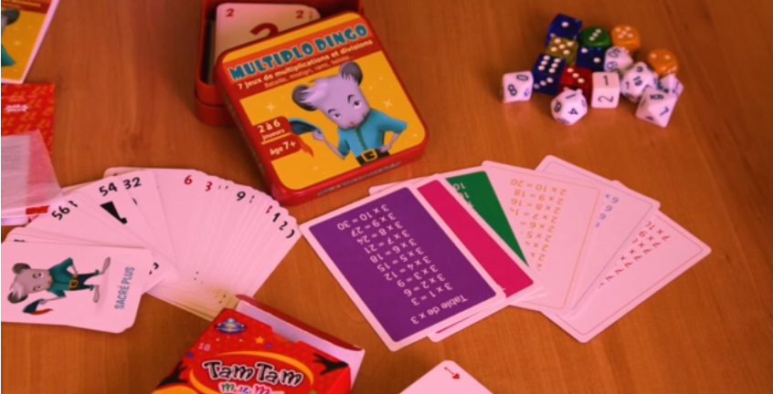

Eixo: Pensamento Computacional – memorização e reconhecimento de padrões,
lógica, estratégia, estruturas de repetição.
Público: Ensino Fundamental I (1º ao 5º ano).
Objetivo: Praticar aritmética de forma divertida e interativa, memorizando
fatos numéricos (tabelas de adição e multiplicação, complementos até 10 e até 100) e
conectando-os a fundamentos de programação.
Duração: Em média 15 minutos por jogo (pode variar conforme a atividade).
Formato: Atividades em grupo – de pequenos grupos até metade da classe.
Materiais: Kit “Aritmética mental” com jogos e cartas numéricas.
Materiais:
Kit "Aritmética mental" contendo os jogos:
Le roi du 7
Mathador
Lobo 77
Le 6 qui prend
Tam Tam
La linotte
La riflette
Yam’s
Bon débarras
Memory de adições, multiplicações etc.
Preparação da atividade (para o professor):
Separe os jogos do kit e verifique se todos os componentes estão completos.
Explique rapidamente as regras de cada jogo escolhido para a sessão.
Organize a turma em grupos (de pequenos grupos até metade da classe, conforme necessidade).

Kit com jogos para prática de aritmética.
Execução da atividade (para os alunos):
Em grupos, escolham um dos jogos do kit e sigam as regras apresentadas pelo professor.
Jogos rápidos: cada rodada dura cerca de 15 minutos. Ao final, os grupos podem rotacionar para
experimentar outro jogo.
Foquem em aplicar estratégias para otimizar resultados (por exemplo, escolher melhores
combinações, antever jogadas e calcular mentalmente).
Discussão e conexão com programação:
Memorização e padrões: Tabelas e complementos numéricos treinam o
reconhecimento de padrões, essencial para simplificar e resolver problemas.
Estruturas de repetição (loops): Jogos como o "Memory" para adições e
multiplicações repetem ações até uma condição ser satisfeita, como nos laços de programação.
Lógica e estratégia: Em "Le roi du 7" ou "Yam’s", decisões lógicas otimizam o
resultado, parecido com o raciocínio para resolver problemas em código.
Gerenciamento de recursos: Em "Bon débarras", a manipulação eficiente de
números lembra o uso de variáveis, memória e armazenamento em programas.